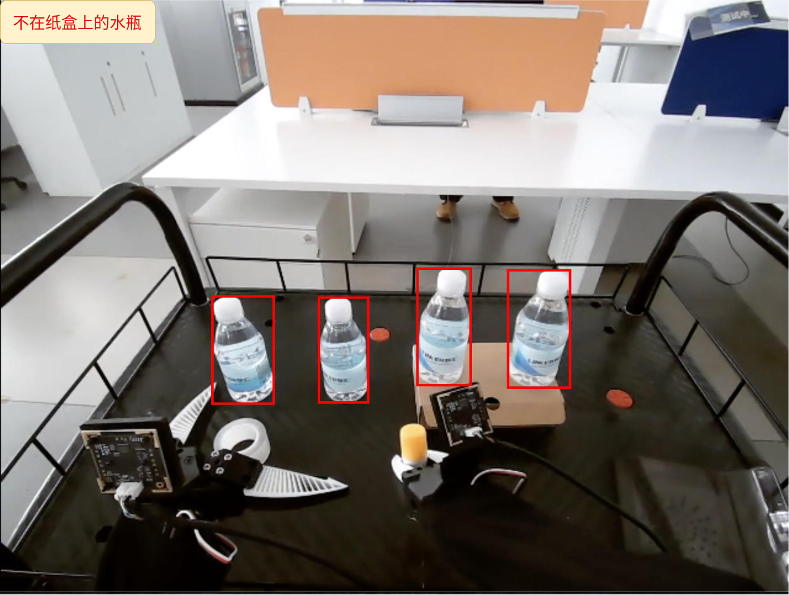
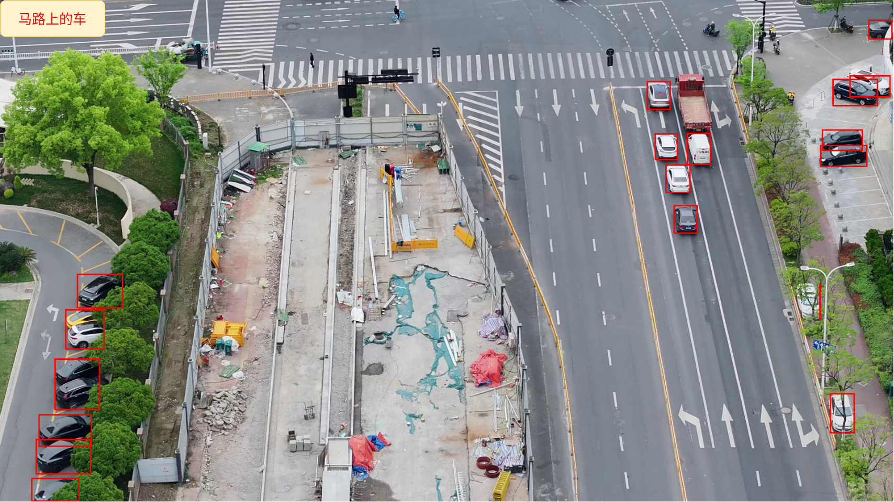
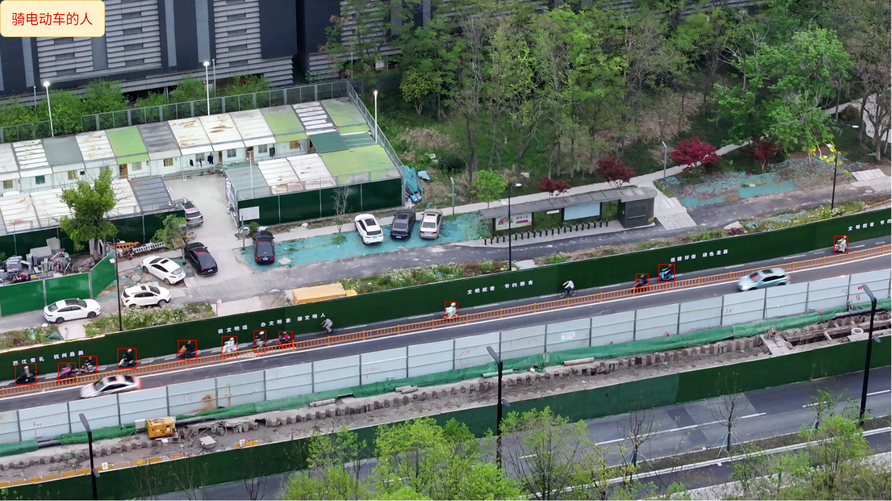
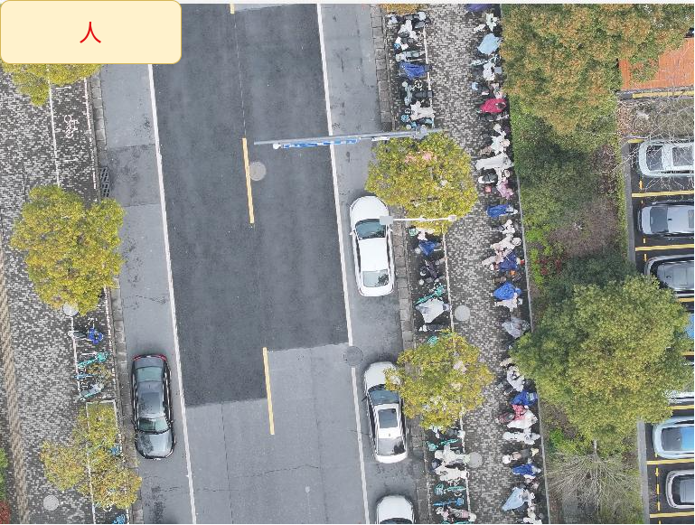
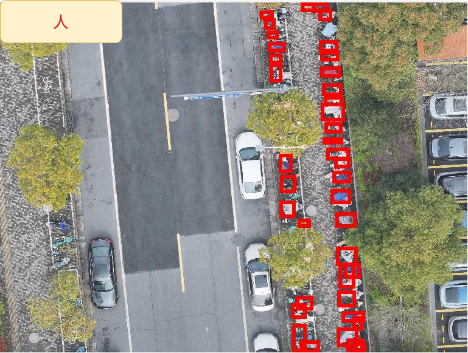

亮点
- 💡 端侧具身感知：VLX-Seek 1.5 面向无人机、机器人、机器狗和监控摄像头等真实具身场景进行优化。
- 📦 多尺度模型系列：VLX-Seek 1.5 规划了 0.6B、3B 和 10B 三种规模，覆盖时延、计算成本和感知能力之间的不同取舍。
- 💪 更强检测能力：新版本通过扩展训练数据、更强的 Aux Vision Tower 和升级后的 VLM backbone，提升复杂语义目标和具身场景下的检测能力。
- 📊 更强基准表现：VLX-Seek 1.5 在多个细粒度感知和具身定位基准上，相比 LocateAnything 等检测增强型 VLM 以及多个更大的开源或闭源模型取得更强结果。
- 🚀 更快推理：更快的 OPN 候选区域生成和更多 Linear Attention 层，使 VLX-Seek 1.5 更适合对时延敏感的端侧部署。
- 🔍 更少目标幻觉：难负样本拒识训练和显式
None输出格式，帮助模型避免定位图像中并不存在的目标。 - 🗃 开源发布：我们将开源 VLX-Seek 1.5 10B 模型，并报告 3B 和 10B 模型的基准评测结果。
1. 引言
VLX-Seek 最初作为面向端侧具身视觉的细粒度感知视觉语言模型提出。它不是要求语言模型直接生成脆弱的坐标字符串，而是将定位重构为区域检索和区域指代：视觉区域被表示为可寻址实体，模型通过选择、比较和引用这些区域来回答问题。
VLX-Seek 1.5 是这一方向上的进一步升级。本次发布重点在于让细粒度视觉定位更强、更快，也更适合端侧具身智能的可靠部署。这些改进并不是孤立的基准优化，而是围绕实际部署需求展开：模型需要准确检测目标、快速响应，并避免对不存在的物体产生幻觉式定位。相比上一版本，VLX-Seek 1.5 提升了复杂语义目标和具身场景下的检测能力，通过更高效的模型系列和注意力设计加速推理，并通过更强的拒识训练和更显式的输入输出格式减少幻觉定位。在多个细粒度感知和具身定位基准上，VLX-Seek 1.5 也展现出相比 LocateAnything 等检测增强型 VLM 以及多个更大开源或闭源模型更强的结果。
这一方向来自真实场景中的需求：视觉感知必须同时准确且可部署。无人机需要从航拍视角检测复杂目标或事件，机器人和机器狗需要为导航与交互识别物体或事件，监控摄像头需要在广角、拥挤或低分辨率条件下定位复杂目标或事件。在这些场景中，更好的检测、更快的推理和更低的幻觉率，直接决定模型能否真正用于实际应用。一个已部署的具身系统不仅要识别画面中有什么，还要知道被指代的是哪一个实例或事件、它在哪里，以及用户请求的目标何时并不存在。
VLX-Seek 1.5 规划为包含 0.6B、3B 和 10B 三种规模的模型系列。本文报告 3B 和 10B 模型的基准结果，并将开源 10B 版本。
2. VLX-Seek 1.5 概览
VLX-Seek 1.5 被设计为一个多尺度细粒度感知模型系列，覆盖 0.6B、3B 和 10B 三个版本。其目标是在一致的区域化定位接口下支持不同部署需求：更小的模型可以服务对时延敏感的端侧感知，更大的模型可以为要求更高的具身应用提供更强的推理和检测性能。跨越这些规模，VLX-Seek 1.5 的核心目标都是实际具身部署，而不是单纯提高离线基准分数。
该版本延续了 VLX-Seek 的核心设计：把视觉区域变成 VLM 可以选择、比较和引用的可寻址实体。在这个以区域为中心的范式上，VLX-Seek 1.5 进一步增强视觉感知栈，扩展具身场景训练覆盖，提升推理效率，并让目标拒识更加显式。这些改动都指向同一个应用目标：让视觉定位在复杂具身场景中足够准确，在交互式端侧系统中足够快速，并且在目标不存在时足够可靠，避免过度自信的误检。
本文重点从四个评测视角展开。第一，我们在 COCO、LVIS、HumanRef、RefCOCO、ODinW 和 Pixmo-Count 等基准上评估通用识别和定位能力。第二，我们在 VisDrone 和 RefDrone 上测试无人机场景感知能力，这类任务的核心挑战包括小目标、密集布局和航拍视角。第三，我们在 RefSpatial 和 EmbSpatialBench 上评估具身机器人场景，其中空间推理和指令条件定位尤其关键。最后，我们在 HumanRef、VisDrone 和 RefDrone 上评估目标幻觉，衡量模型是否能够避免检测图像中不存在的目标。
3. 模型层面的更新
VLX-Seek 1.5 的模型更新围绕一个面向部署的目标展开：让细粒度感知更适合端侧具身智能。在真实应用中，模型需要准确检测复杂目标，具备足够快的交互式推理速度，并避免过度自信地定位不存在的对象。因此，VLX-Seek 1.5 从三个维度改进上一版本：更强视觉能力、更快推理和更少幻觉。
3.1 更强视觉能力
VLX-Seek 1.5 同时增强了复杂语义目标和具身场景下的视觉感知能力。相比上一版本，我们在训练混合数据中加入了更多无人机视角、监控视角、机器人视角和其他具身感知场景的数据。这些数据让模型接触到部署中经常出现的视觉条件：小目标、密集布局、非常规视角、长尾类别，以及由自然语言指令限定的目标描述。
我们也升级了视觉感知栈。VLX-Seek 1.5 使用更强的 Aux Vision Tower，同时改善视觉语言对齐和纯视觉特征质量。结合更强的 VLM backbone，这提升了模型区分相似实例、理解复杂指代表达，以及在困难具身环境中检测目标的能力。
3.2 更快推理
VLX-Seek 1.5 同样面向更快、更可部署的推理进行设计。模型系列包含 0.6B、3B 和 10B 三种规模，使不同系统可以根据时延、计算成本和感知质量选择合适版本。对于无人机、机器人、机器狗和监控摄像头等端侧具身系统来说，这一点尤其重要，因为它们经常受到算力和功耗限制。
除了模型规模之外，VLX-Seek 1.5 引入更多 Linear Attention 层和更快的 OPN，以提升推理效率并降低内存使用。同时，它继承了 VLX-Seek 的区域指代范式：模型不需要为每个目标解码冗长坐标字符串，而是可以输出对候选区域的紧凑引用。这缩短了定位输出路径，对多目标定位和交互式感知尤其有用。
3.3 更少目标幻觉
可靠性是 VLX-Seek 1.5 的另一个核心重点。在开放世界具身场景中，幻觉式检测有时比漏掉不确定目标更危险：机器人可能走向错误物体，无人机可能追踪一个不存在的目标，监控系统也可能触发误报。为降低这一风险，VLX-Seek 1.5 在训练中加入更多难负样本拒识数据，并改进了包含存在目标与缺失目标的检测输入输出格式。
在此前较隐式的格式中，如果提示同时询问目标 A 和 B，而图像中只有 A，模型可能只返回 A 的检测结果并省略 B。VLX-Seek 1.5 转向更显式的格式：模型应返回 A 的检测结果，并将 B 标记为 None。这让模型不仅学习如何定位可见目标，也学习如何明确拒绝不存在的目标。对于真实具身系统而言，知道某个请求目标缺失，往往和找到存在目标一样重要。
4. 具身与端侧视觉理解
具身视觉智能不同于离线图像理解。部署后的系统往往需要在连续循环中感知、决策和行动。对于无人机、机器人、机器狗、监控摄像头、移动设备和巡检系统来说，视觉定位不只是给图像中的对象命名，而是建立稳定的空间锚点，以支持导航、交互、跟踪、巡检和安全监测。
这些场景也会暴露标准网页图像基准中覆盖不足的视觉条件。无人机视角通常包含极小目标、密集目标布局、大尺度变化和倾斜视角。监控和移动摄像头场景则会引入广角畸变、低分辨率、拥挤画面、运动模糊，以及可能需要靠近传感器端处理的隐私敏感数据。在这些情况下，模型必须超越干净的对象中心图像，在困难真实视角下保持泛化和可靠性。
机器人中心的感知还带来另一组要求。机器人或机器狗可能需要识别笔记本旁边的杯子、椅子后面的人，或者自然语言指令中提到的对象。这不仅需要类别识别，还要求模型理解空间关系、区分对象实例、遵循指令条件查询，并知道请求目标何时不存在。对具身智能体来说，错误的定位结果会直接影响后续行动。
这正是 VLX-Seek 1.5 强调端侧实用性的原因。有限算力、有限功耗、实时交互、网络不稳定和隐私要求，都使高效本地感知变得重要。相比坐标生成，区域指代范式可以降低定位解码成本，尤其适合需要定位多个对象的场景。同时，0.6B、3B 和 10B 模型系列也覆盖了从轻量端侧感知，到更强服务器端或机器人基站推理的不同边云部署形态。
5. 基准结果
我们报告了 VLX-Seek 1.5-3B 和 VLX-Seek 1.5-10B 在四组评测中的结果。表 1-3 覆盖通用目标检测、指代表达理解和计数基准；表 4 关注无人机视角感知；表 5 评估具身空间推理；表 6 使用 FP/GT 指标衡量目标幻觉，该指标越低越好。
在这些基准中，VLX-Seek 1.5 与上一版 VLX-Seek、Rex-Omni 和 LocateAnything 等检测增强型 VLM，以及多个更大的开源或闭源模型进行比较。结果显示，VLX-Seek 1.5 不仅提升了通用细粒度感知能力，也在无人机视角定位、机器人中心空间推理和目标幻觉降低等具身场景中具备很强竞争力。
5.1 通用识别

表 1：通用识别基准结果。

表 2：通用 REC 基准结果。

表 3：通用 REC 与定位基准结果。
5.2 无人机场景

表 4：无人机场景基准结果。
5.3 具身机器人场景

表 5：具身机器人场景基准结果。
5.4 目标幻觉评测
在具体的具身部署中，仅有强识别能力还不够。模型还应该避免检测图像中并不存在的目标。这对机器人、无人机和监控系统尤其重要，因为错误目标定位可能导致错误动作、误报或不稳定的下游行为。
为评估这一行为，我们引入目标幻觉指标：
Object Hallucination = FP / Number of GT Objects其中，FP 表示针对实际不存在的请求目标产生的假阳性检测，分母用真实目标数量进行归一化。分数越低，说明幻觉式目标检测越少。
我们在 HumanRef、VisDrone 和 RefDrone 上评估这一指标，并将 VLX-Seek 1.5 与 VLX-Seek、RexOmni 和 LocateAnything 进行比较。结果显示，VLX-Seek 1.5 在获得更强识别性能的同时，也实现了更低的目标幻觉分数，说明它在通用指代表达和具身感知场景中具备更可靠的拒识行为，并没有牺牲定位准确性。

表 6：目标幻觉评测结果。
6. 定性示例
我们进一步展示代表性案例，对比 VLX-Seek 1.5-3B 与 LocateAnything 的表现。每一排按照图片编号顺序排列，左侧为 VLX-Seek 1.5-3B，右侧为 LocateAnything。




